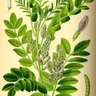

Plant Grimoire

LicoriceNotes/Warnings
Not recommended for internal use if pregnant, if you have kidney problems, liver problems, diabetes, hypokalemia.
Do not take in large amounts or long term.
May deplete potassium.
Origin
Scientific Name
Safety & Uses
Gender
Also called
Sweet Root, Liquorice, Yashtimadhu, Mulethi, Spanish Licorice, Lakritze, Licorice Root, Sweet Licorice
Astrology1
Dreams1
Recipes8
Rituals17
Calamus Power BathI Radiate Power SpellHorse Nightmare Relief SpellDomination PowderLicorice Stick SpellAunt Sally's Dream PowderSealed Up in a JarLicorice Root Hem Commanding Fidelity SpellLa Madama's Dream SteamHollyhock Extra Strength Domination CharmCompelling BraceletGris-Gris Silence BagDish of Persuasion SpellDomination Powder SpellPhotograph Powder Debt SpellRetribution CandleCompelling Curse Breaker Powder
Licorice (Glycyrrhiza glabra) is a sweet Venus root for love, fidelity, and stirring desire.
Magickal Properties
Gender: Masculine (source: Cold)
Planet: Venus (source: Mercury)
Element: Water (source: Earth/Air)
Deities: Hermes/Mercury, Thoth, Anubis, Maat, Odin, Ogma (from source)
Powers: Protection, Cursing, Prophetic Dreams, Lust, Love, Fidelity
Magickal Uses
- Passion and quitting aid: Chew a licorice stick (the root) to kindle passion; also a useful habit when quitting smoking.
- Love work: Add to love and lust sachets, carry to attract love, and use in spells to secure fidelity.
- Craft tool: Licorice sticks make useful small wands.
- Teas: Used in herbal teas. Do NOT use on anyone with blood pressure problems.
Safety: Not recommended internally if pregnant; avoid with kidney, liver disease, diabetes, or hypokalemia; do not take in large amounts or long term. May deplete potassium.